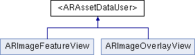

#import <ARAssetDataUser.h>
Inheritance diagram for <ARAssetDataUser>:

Public Member Functions | |
| (NSSet *) | - assetIdentifiersForNeededData |
| (void) | - useData:forAssetIdentifier: |
| (void) | - setDataUnavailableForAssetIdentifier: |
Detailed Description
Protocol that can be implemented by classes that have one or more asset identifiers and are in need of the assets' data.
A user of a class can check whether it conforms to this protocol and use this protocol to ask it whether it needs any asset data.
Member Function Documentation
| - (NSSet *) assetIdentifiersForNeededData |
Returns a set of asset identifiers for which this class wants to use asset data, but doesn't have the asset data yet.
- Returns:
- A set of strings.
| - (void) setDataUnavailableForAssetIdentifier: | (NSString *) | identifier |
Tells the receiver that no data is available for the given asset identifier. It is always possible that data becomes available later.
- Parameters:
-
identifier The asset identifier for which data is unavailable. May not be nil. Unknown asset identifiers are ignored.
| - (void) useData: | (NSData *) | data | ||
| forAssetIdentifier: | (NSString *) | identifier | ||
Tells the receiver to use the given asset data for the given asset identifier.
- Parameters:
-
data The asset data. May be nil, in which case any asset data currently being used for the given asset identifier is cleared. identifier The asset identifier for which the data is given. May not be nil. Unknown asset identifiers are ignored.
The documentation for this protocol was generated from the following file:
- Sources/ARAssetDataUser.h
Generated on Tue Jul 6 2010 08:57:30 for iBetelgeuse by
 1.7.0
1.7.0